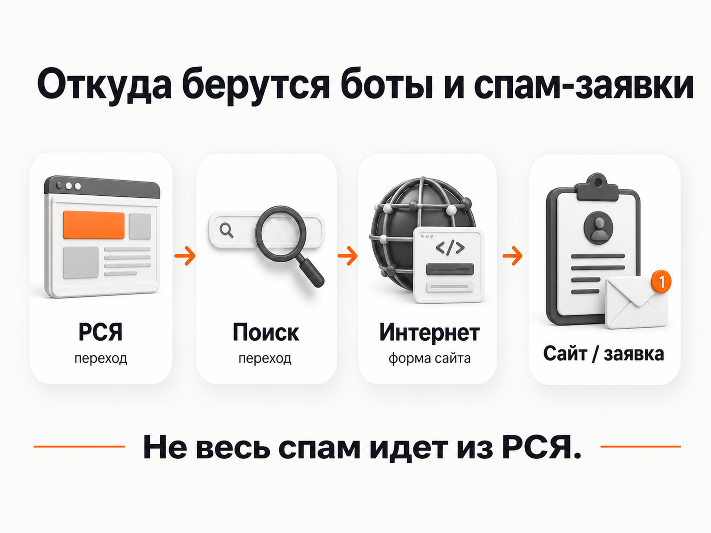
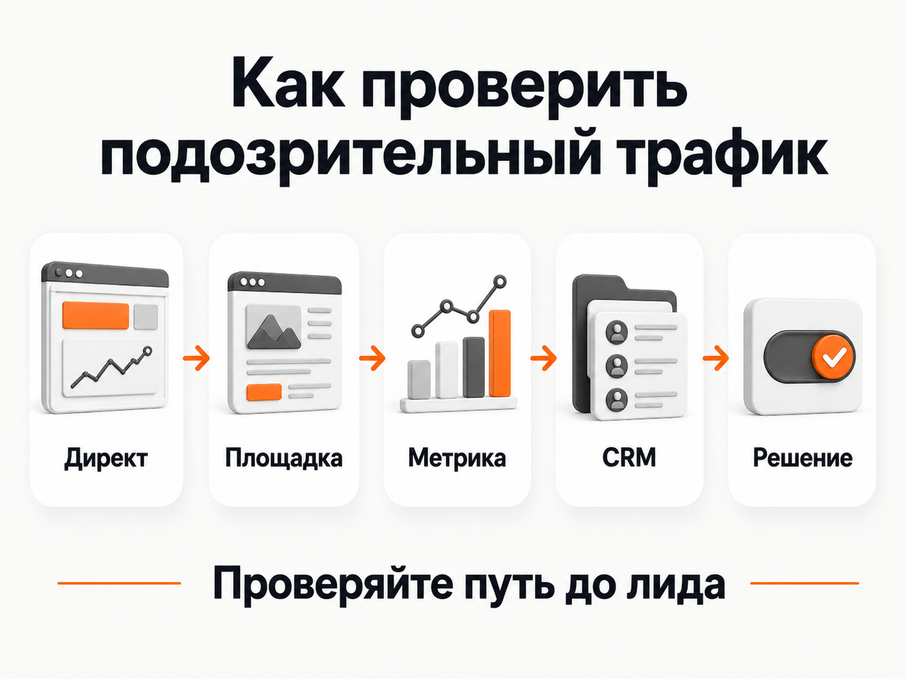
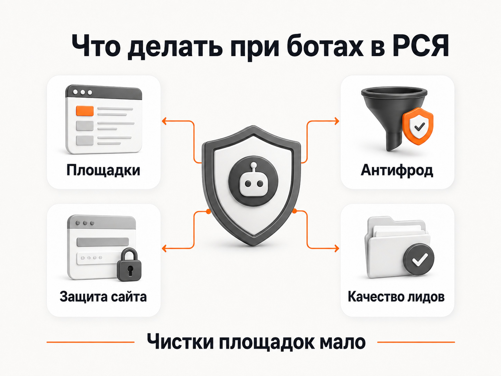

Блог о платном трафике
Боты в РСЯ: как определить и что с ними делать
Боты в РСЯ действительно встречаются, но списывать на них весь плохой трафик неправильно.
Боты в РСЯ действительно встречаются, но списывать на них весь плохой трафик неправильно. В рекламных сетях есть как автоматические переходы, так и обычные случайные клики, слабые площадки и реальные пользователи, которым ваше предложение просто неинтересно.
Поэтому я сначала разделяю проблему на три части:
- Недействительный рекламный трафик, который Яндекс определяет как фрод.
- Некачественный трафик с отдельных сайтов и мобильных приложений РСЯ.
- Спам и автоматические заявки, которые могут отправляться на сайт вообще без перехода по рекламе.
Методы борьбы во всех трех случаях разные.
Откуда берутся боты в РСЯ
РСЯ включает сайты, мобильные приложения и другие партнерские площадки, на которых показываются объявления Яндекс Директа. Кроме самой Рекламной сети объявления могут размещаться во внешних рекламных сетях.
На практике особенно внимательно я отношусь к мобильным приложениям, играм, развлекательным сервисам и некоторым внешним площадкам. Это не означает, что любое Android-приложение автоматически плохое. В одних проектах приложение может давать нормальные заявки, в других - много случайных переходов или подозрительной активности.
Часть такого трафика может быть настоящим фродом. Яндекс относит к недействительному трафику, например, клики ботов, мошеннического программного обеспечения и мотивированных пользователей. Отдельно система учитывает случайные клики, которые не имеют ценности для рекламодателя.
Но есть важное различие: плохая площадка и ботовая площадка - не одно и то же.
Если пользователь случайно нажал баннер в мобильной игре и тут же закрыл сайт, это может быть живой человек. Для бизнеса такой переход почти бесполезен, но технически это не обязательно бот.
Поэтому при анализе РСЯ я ищу прежде всего не «ботов», а источники трафика, которые системно расходуют деньги и не дают нормального результата.
Подробнее о чистке трафика - в статье «Минус площадки для РСЯ: готовый список и чистка трафика».

Яндекс сам фильтрует часть ботов
У Яндекс Директа есть собственная антифрод-система. Сейчас она работает на нескольких этапах.
Если система заранее уверена, что перед ней бот или мошеннический пользователь, объявление может вообще не показываться. При подозрительном клике Яндекс также может дополнительно проверить пользователя. После перехода анализ продолжается, и часть действий может быть признана недействительной уже позднее.
Недействительные клики и конверсии удаляются из статистики Директа. Расходы за такой трафик не списываются либо автоматически возвращаются на общий счет. В Библиотеке отчетов Директа есть отдельный отчет «Недействительный трафик», где можно посмотреть часть отфильтрованных действий.
Из этого следует важный практический момент.
Если в Вебвизоре вы увидели странный визит, это еще не значит, что за него обязательно были списаны деньги.
Яндекс прямо указывает, что Вебвизор может содержать визиты, которые антифрод Директа уже признал недействительными. В отчетах группы «Директ» такие переходы фильтруются.
Поэтому схема «увидел бота в Вебвизоре - значит Яндекс украл деньги за клик» некорректна.
Как определить ботов и плохой трафик в РСЯ
Одного показателя, который однозначно говорит «это бот», нет. Я смотрю одновременно на Директ, Метрику и качество заявок.
1. Начните с отчета по площадкам
В актуальном интерфейсе Яндекс Директа есть отдельный отчет «Площадки». Он показывает статистику по сайтам и приложениям, где размещались объявления, и позволяет прямо из отчета запрещать показы на отдельных источниках.
Я в первую очередь смотрю:
- расход;
- клики;
- CTR;
- конверсии;
- CR;
- CPA;
- качество полученных заявок.
Сортировать удобно сначала по расходу. Нет большого смысла часами изучать приложение, которое потратило 30 рублей. Гораздо важнее найти источники, куда уже ушла заметная часть бюджета.
2. Ищите аномальный CTR
Очень высокая кликабельность в РСЯ - повод проверить площадку.
Особенно подозрительно выглядит ситуация, когда отдельное приложение дает намного больший CTR, чем остальные источники, активно расходует бюджет, но почти не приносит целевых действий.
Высокий CTR сам по себе ничего не доказывает. Причиной могут быть особенности расположения рекламного блока, случайные нажатия, небольшой объем статистики или действительно автоматический трафик.
Поэтому я никогда не отключаю площадку только из-за одной цифры.
Подробнее - в статье «Какой CTR считается хорошим в Яндекс Директе».
3. Посмотрите поведение пользователей
Дальше открываю Метрику и Вебвизор.
Типичная подозрительная картина выглядит так:
- десятки или сотни однотипных коротких визитов;
- пользователь практически сразу покидает страницу;
- нет скролла и осмысленных действий;
- переходы повторяются по похожему сценарию;
- площадка дает много трафика, но почти никто не доходит до нормальной цели;
- после большого количества переходов нет качественных обращений.
Опять же, один короткий визит ничего не доказывает. Человек вполне может случайно открыть рекламу и сразу вернуться обратно.
Значение имеет повторяющаяся картина по конкретному источнику.
Метрика умеет отдельно определять часть роботных визитов по поведению и другим техническим признакам. При этом сама документация Яндекса отдельно предупреждает, что системы определения роботов в Метрике и Директе различаются.
Поэтому данные этих систем не обязаны совпадать один в один.
4. Обязательно проверяйте сами заявки
Для бизнеса этот этап важнее практически любых поведенческих метрик.
Площадка может показывать нормальный CPA, но после проверки оказывается, что обращения состоят из:
- несуществующих телефонов;
- повторяющихся контактов;
- бессмысленного текста;
- людей, которые ничего не отправляли;
- полностью нецелевых обращений;
- заявок, до которых невозможно дозвониться.
Если вы смотрите только на цели Метрики, рекламная кампания при этом может выглядеть вполне успешной.
Поэтому я стараюсь оценивать РСЯ по цепочке:
площадка -> клик -> заявка -> квалифицированный лид -> продажа.
Особенно это важно при использовании автоматических стратегий. Если рекламная система получает сигнал, что отправка любой формы является хорошей конверсией, мусорные заявки могут искажать оптимизацию.
О причинах таких обращений - в статье «Некачественные лиды из Яндекс Директа: почему идут нецелевые заявки».

Что делать с подозрительными площадками РСЯ
Если конкретный сайт или приложение стабильно расходует деньги и не дает нормальных результатов, его можно исключить.
Яндекс рекомендует принимать такие решения на основании достаточной статистики, а не блокировать площадки после нескольких переходов.
Сам алгоритм простой:
- Открыть отчет «Площадки».
- Отсортировать источники по расходу.
- Проверить конверсии и CPA.
- Посмотреть источники с аномальным CTR.
- Проверить их через Метрику и Вебвизор.
- Сопоставить данные с качеством лидов.
- Отключить площадки, которые системно не дают результата.
В обычных кампаниях можно запрещать отдельные сайты и приложения. По актуальным ограничениям Директа для баннерных размещений можно исключить до 1000 доменов. При этом целые внешние рекламные сети запретить нельзя, блокируются отдельные площадки внутри них.
Не советую автоматически отключать все мобильные приложения или использовать огромный чужой blacklist без проверки. Площадки меняются, появляются новые приложения, а результат одной и той же площадки может различаться в разных тематиках.
Подробно саму механику чистки я разбираю отдельно.
Подробнее о чистке трафика - в статье «Минус площадки для РСЯ: готовый список и чистка трафика».
Боты могут приходить на сайт вообще без РСЯ
Это отдельная проблема, которую часто ошибочно пытаются решить настройками Директа.
Бот может отправлять данные непосредственно на обработчик формы сайта. Ему необязательно открывать страницу в браузере, двигать мышкой и нажимать кнопку «Отправить».
Если форма или серверная часть сайта плохо защищены, автоматический скрипт может обращаться к ней напрямую.
В результате в CRM появляются фейковые заявки, хотя никакого рекламного перехода перед этим вообще не было.
Признаки такой проблемы:
- количество спама не связано с количеством рекламного трафика;
- заявки продолжают поступать после остановки рекламы;
- в Метрике невозможно найти соответствующие визиты;
- формы отправляются с одинаковой структурой данных;
- появляются массовые обращения за короткий промежуток времени.
В этой ситуации бессмысленно бесконечно чистить РСЯ. Нужно защищать сам сайт.
Как защитить сайт от автоматических заявок
Первый очевидный уровень - CAPTCHA или другая проверка того, что форму отправляет человек.
Но одной капчей ограничиваться не стоит. Защиту лучше делать на стороне сервера, чтобы нельзя было просто обойти интерфейс формы и отправить запрос напрямую.
Обычно используют сочетание нескольких механизмов:
- CAPTCHA;
- серверную проверку отправляемых данных;
- ограничение частоты запросов;
- защиту от многократной отправки одинаковых данных;
- дополнительные антиспам-правила;
- специализированные антифрод-сервисы при большом объеме проблемы.
Если спам уже попадает в CRM, его полезно отдельно маркировать, чтобы такие заявки не смешивались с нормальными лидами и не использовались для оценки эффективности рекламы.
Нужен ли отдельный антифрод-сервис
Не для каждого проекта.
У Яндекс Директа уже есть собственная система антифрода, поэтому подключать дополнительный сервис просто потому, что в РСЯ существуют боты, я бы не стал.
Сначала нужно понять масштаб проблемы.
Если после обычной чистки площадок, проверки статистики и защиты форм подозрительного трафика все равно много, тогда внешний антифрод может быть оправдан.
Такие системы помогают дополнительно анализировать переходы, находить подозрительных пользователей и площадки, а некоторые могут использовать полученные данные для дальнейшего ограничения показов.
Подробнее - в статье «Скликивание в Яндекс Директе: как определить и защититься».
Бывают ли боты на поиске Яндекса
Да. РСЯ не является единственным местом, где может появляться автоматический или недействительный трафик.
Сам Яндекс прямо указывает, что антифрод используется и для РСЯ, и для поиска.
На поиске проблема обычно менее заметна, потому что пользователь сам вводит запрос и рекламное объявление показывается в более понятном контексте. Но полностью исключать ботов нельзя.
Автоматические переходы могут быть связаны со скликиванием рекламы, различными схемами накрутки или автоматизированной активностью в интернете.
Поэтому формула «Поиск - люди, РСЯ - боты» слишком примитивна.
Риск есть в обоих источниках. Просто в РСЯ дополнительно появляется огромное разнообразие сайтов, мобильных приложений и рекламных мест, поэтому контролировать качество трафика там приходится внимательнее.
Не путайте ботов с просто плохой рекламой
Еще одна частая ошибка - объяснять ботами любую кампанию, которая не приносит заявки.
Допустим, РСЯ получила 500 переходов, но продаж нет. Причиной могут быть:
- слабый оффер;
- нецелевая аудитория;
- неудобный сайт;
- слишком широкие настройки;
- неправильно выбранная цель оптимизации;
- плохое предложение на фоне конкурентов;
- проблемы с обработкой лидов;
- действительно плохие площадки;
- боты.
Поэтому начинать диагностику со слов «Яндекс опять нагнал ботов» неправильно.
Сначала нужно определить, на каком этапе ломается воронка.
Если плохие показатели идут только с нескольких конкретных приложений - проблема, скорее всего, находится в площадках.
Если одинаково плохо ведет себя трафик практически из всех источников, включая поиск, нужно проверять уже сайт, предложение и саму рекламную кампанию.
Что делать, если вы подозреваете ботов в РСЯ
Мой порядок проверки такой:
1. Проверить отчет «Недействительный трафик» в Директе.
Часть подозрительных действий Яндекс уже мог самостоятельно отфильтровать.
2. Открыть отчет по площадкам.
Найти основные источники расхода и площадки с аномальными показателями.
3. Проверить Метрику и Вебвизор.
Посмотреть реальные сценарии поведения пользователей.
4. Сопоставить рекламные данные с заявками.
Проверить дозвон, качество контактов и квалификацию лидов.
5. Исключить явно плохие площадки.
Не по названию приложения, а по фактической статистике.
6. Проверить сам сайт.
Если спам приходит независимо от рекламы, защищать нужно формы и серверную обработку.
7. Только после этого подключать дополнительный антифрод.
Если стандартных инструментов недостаточно и проблема действительно существенная.
Главное - не пытаться решить все одним огромным черным списком. У ботов и мусорного трафика несколько разных источников, поэтому нормальная защита строится сразу на уровне рекламы, аналитики, сайта и качества лидов.
